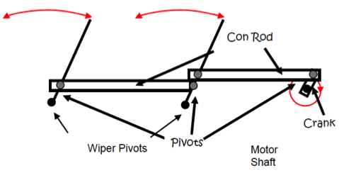
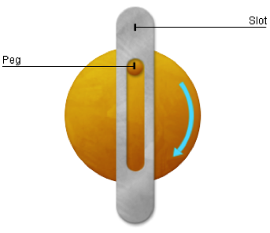
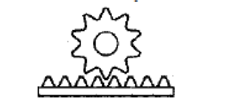
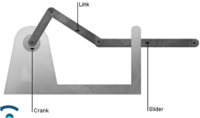
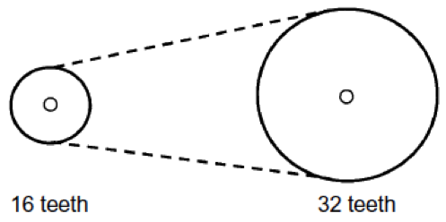
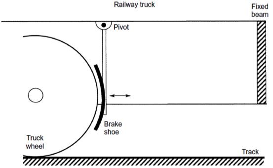
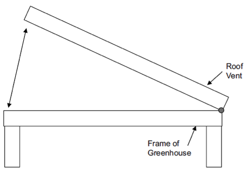
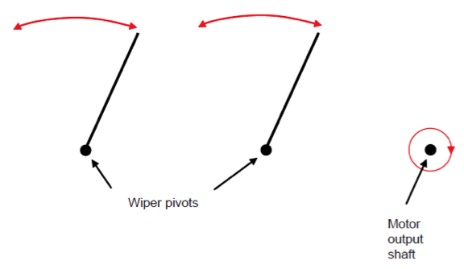
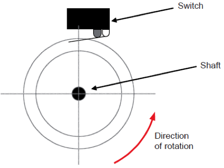
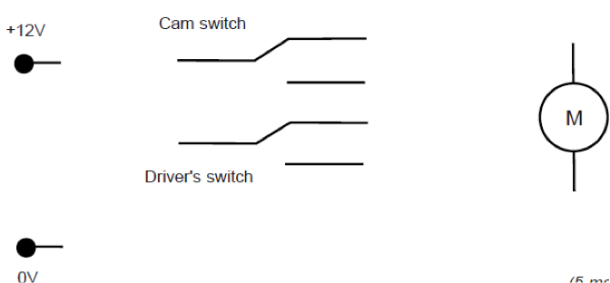

Mechanisms
Table of Contents
1 Introduction
- In order to make useful new machines and products, a systems engineer needs to be able to understand electronics (to create control circuitry), drive systems (to understand different electromechanical options such as servo motors) and mechanisms in order to produce motion of the required type to solve the problem at hand.
- This typically involves understanding gears, belt/pulley systems and different linkages. You need to ensure you know of suitable linkages to convert between different types of motion.
- BBC Bitesize has a superb set of pages (with interactive demonstrations) showing different mechanisms, and is available here.
2 Converting motion
Rotary to Oscillating
- The Treadle linkage (seen in windscreen wipers) is used to convert rotary motion to oscillating motion, or vice-versa. Pre-electricity sewing machines often had a foot operated treadle that was used to drive a wheel.

- In the diagram, the rotary prime mover is connected to an connecting rod (or /"conrod"/ for short) on a fixed pivot, causing smooth oscillating motion as the crank is turned.
- The Peg and slot linkage performs the same conversion of motion, but the motion is not smooth.

- In the diagram above, as the rear disk rotates clockwise initially, the slot part will move quickly to the right, as the peg is close to the pivot point at the top. Once the peg is towards the bottom of the wheel (after 180 degrees of rotation), the slot part will move more slowly, as it is further from the pivot.
Rotary to Reciprocating/Linear
- Rack and Pinion gear: Used to convert rotary motion to linear motion, as seen in steering systems on cars, lock-gates on rivers, and on mountain railways. This system has many applications, and a large percentage of both GCSE and A level system design questions can be solved with the creative use of these.

- Crank, link and Slider: Another excellent method of achieving this conversion. Remember that when these systems in the real world, the output slider will need guides to help it move in the desired way.

- Cam and follower: A shaped piece of material, fixed to a rotating shaft, cams are found in car engines (where the exploding petrol in the car's cylinders force followers up against a shaft containing several cams, causing it to spin) and many other mechanisms.
- An excellent guide to cams can be seen on the BBC Bitesize site, here.
3 Recap
Past Paper Questions
June 2007, Q7. This question is about mechanisms and mechanical components. The chain and sprocket shown below is part of a drive system for a cooling fan in a tram. The smaller sprocket is connected to an electric motor and the larger sprocket is connected to the fan.  The motor spins at 10 000 revolutions per minute (rpm).
(a) Calculate the speed of the fan.
Formula:
Calculation:
Answer with units: (4 marks)
(b) Discuss the use of chain drives compared with other drive systems. (4 marks)
(c) This part of the question is about a hand brake for a railway truck. Part of the truck is drawn below.  (i) Draw a mechanical device between the fixed beam and the brake shoe, which will allow the driver to manually apply the brake shoe to the wheel.
Complete the diagram to ensure that your solution will prevent the truck moving when the user lets go of the operating handle all parts you add are labelled.
Marks will be awarded for designing a mechanical device that will force the brake shoe onto the wheel (4 marks) fixing the device to the fixed beam and the brake shoe (2 marks) quality of notes and sketches. (2 marks)
(ii) State two advantages of your mechanism shown above for this application. (2 marks)
(iii) Explain how your response to part (c)(i) could be modified to make it easier for the user to apply the hand brake. (2 marks)
June 2010, Q5a. (iv) Sketch on the diagram below how a micro-switch could sense that the roof vent is closed. Marks will be awarded for: - a component mounted correctly (1 mark) the ability to sense that the vent was closed (1 mark) a good quality labelled sketch of the sensing system. (2 marks) 
(v) Describe how your system in part (a) (iv) works. (3 marks)
June 2012, Q3. (b) Draw and name a mechanism that will change rotary motion into oscillating motion. Label all parts for 4 marks. (4 marks)
3 (c) Draw and name a mechanism that will transfer rotary motion through 90°. Label all parts for 4 marks. (4 marks)
3 (d) Draw and name a mechanism that will increase or decrease the speed of rotation. Label all parts for 4 marks. (4 marks)
June 2012, Q4. This question is about a car windscreen wiper system. 4 (a) On the diagram below draw a mechanism that connects the motor to the wipers so that the two wipers move continually in the required motion.  Marks will be awarded for: adding labels to the diagram
moving a wiper
moving a wiper in correct motion
moving both wipers in correct motion
moving both wipers continuously
drawing neatly in proportion. (6 marks)
The car windscreen wiper system uses a cam and a switch so that the wipers always stop at the bottom of the windscreen when the driver turns them off.
4 (b) Design a cam that will ensure that the wipers always stop at the same position. The switch should only be operated for a quarter of a turn. Draw the cam outline between the dotted guide circles: (4 marks) 
4 (c) Name the switch shown above. (1 mark)
4 (d) On the circuit below connect the motor and both switches to the power supply to ensure that the wipers operate when the Cam switch or the Drivers switch is ON. Both switches are shown not operated (OFF). (5 marks) 